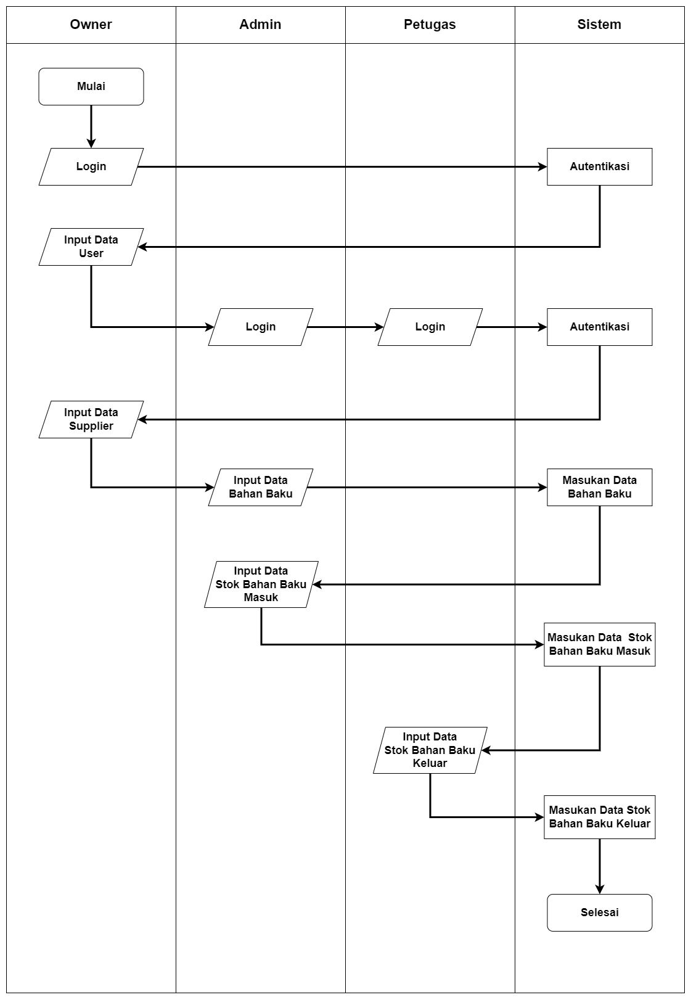
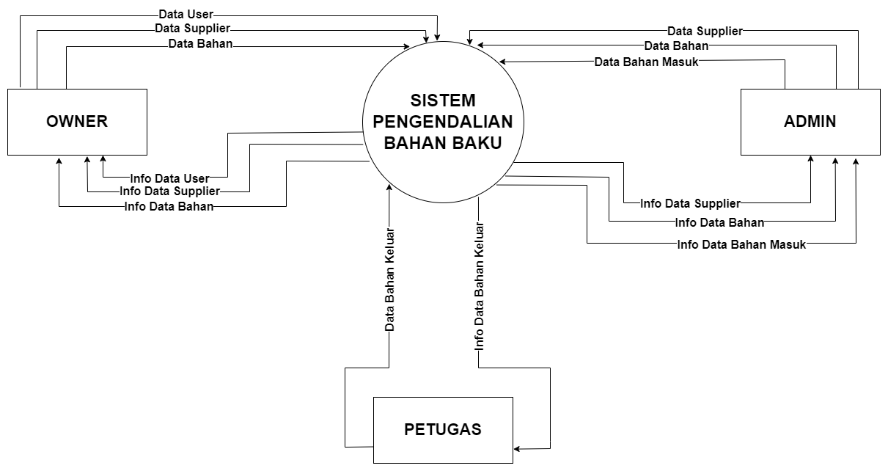
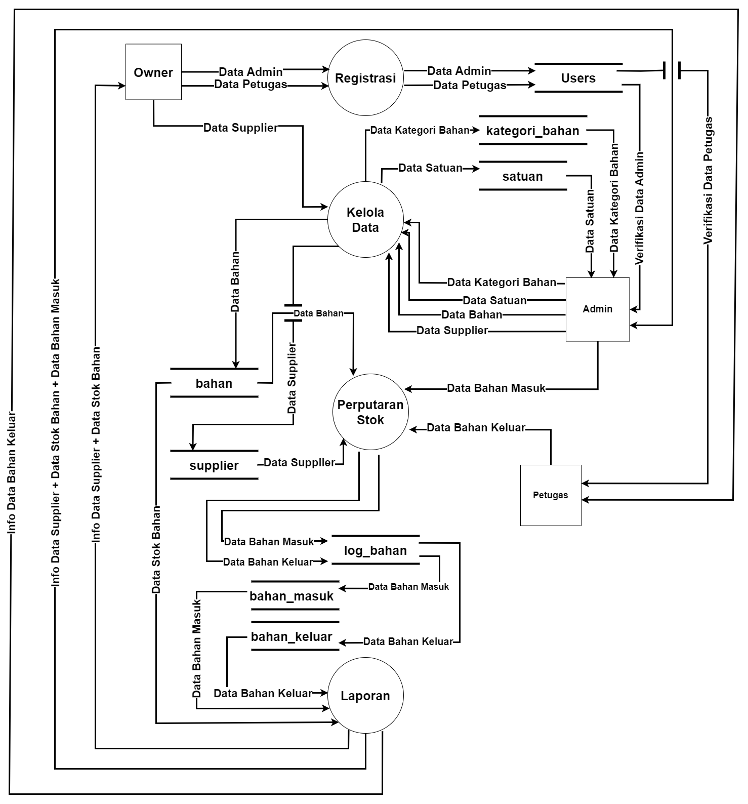
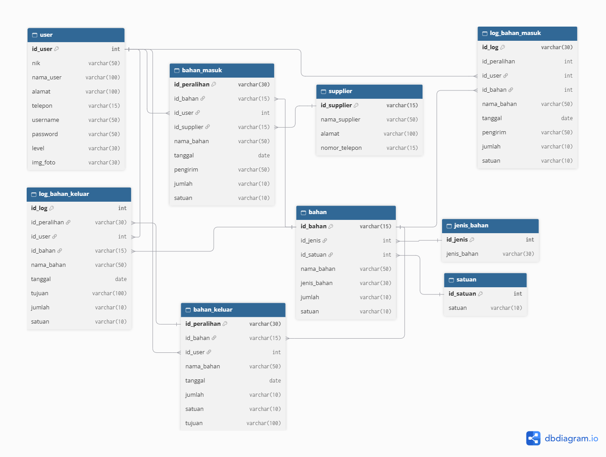

Detail Dokumentasi Proyek
Pengendalian Bahan Baku FnB - Overview & Panduan
Sistem pengendalian dan pengawasan bahan baku yang dirancang khusus untuk mengotomatisasi pencatatan sirkulasi bahan baku bisnis Food and Beverage (FnB), meminimalkan selisih stok fisik, serta menghadirkan transparansi arus keluar-masuk bahan baku secara real-time bagi manajemen.
Repositori ini murni menampilkan dokumentasi perancangan sistem dan analisis bisnis. Seluruh source code, konfigurasi server, serta kunci API tidak disematkan untuk mematuhi kebijakan privasi, hak kekayaan intelektual, serta perjanjian kerahasiaan dengan pihak mitra terkait.
Latar Belakang & Analisis Masalah
- Profil Studi Kasus: Kafe Momentum Kopi adalah bisnis Food and Beverage (FnB) yang menyajikan produk minuman berbasis kopi, susu, serta makanan dengan mobilitas perputaran bahan baku yang cepat dan tinggi.
- Pain Points: Pengelolaan konvensional berbasis kertas, terjadinya selisih stok gudang dengan pembukuan, serta tingginya risiko human error tanpa pengawasan real-time.
Fitur Utama Sistem
Business Requirement Document (BRD)
Operasional bisnis di sektor Food and Beverage (FnB) menuntut kecepatan serta ketepatan pengelolaan bahan baku. Pencatatan konvensional dengan buku besar rentan terhadap keterlambatan informasi ketersediaan bahan.
Problem Statement (Identifikasi Masalah)
- Ketidakakuratan Data Stok: Sering terjadi selisih antara jumlah fisik bahan baku di gudang dengan pencatatan pembukuan utama.
- Risiko Human Error: Tingginya volume transaksi harian serta kelelahan operasional memicu kesalahan pencatatan manual.
- Kurangnya Transparansi Pengawasan: Pemilik (Owner / Superadmin) kesulitan melakukan pemantauan secara real-time terhadap arus keluar-masuk bahan baku.
Project Objectives & Scope
- Tujuan: Mengotomatisasi pencatatan sirkulasi bahan baku, meningkatkan akurasi inventaris, dan meminimalkan human error.
- In-Scope: Pengelolaan data master dasar (Kategori, Satuan, Bahan Baku, Supplier) dan struktur basis data relasional.
Functional & Non-Functional Requirement
Berikut adalah ringkasan spesifikasi kebutuhan fungsional (FR) dan non-fungsional (NFR) sistem:
| ID | Modul / Fitur | Perilaku Sistem |
|---|---|---|
FR-01 |
Autentikasi Login | Menyediakan halaman autentikasi terpusat untuk memvalidasi username, password, dan RBAC bagi Superadmin, Admin, dan Petugas. |
FR-02 |
Manajemen Pengguna | Superadmin memiliki kewenangan penuh untuk penambahan, pembaruan, verifikasi, dan status akun Admin serta Petugas. |
FR-03 |
Manajemen Data Master | Admin melakukan CRUD data master: Data Supplier, Data Bahan Baku, Kategori Bahan, dan Satuan Bahan. |
FR-04 |
Pencatatan Bahan Masuk | Admin mencatat transaksi penerimaan bahan dari supplier lengkap dengan detail jumlah, satuan, dan tanggal masuk. |
FR-05 |
Pencatatan Bahan Keluar | Petugas (Head Bar) mencatat transaksi pengeluaran bahan untuk produksi beserta tujuan penggunaannya. |
FR-06 |
Log & Audit Stok | Sistem otomatis merekam perubahan inventaris ke tabel log sebagai riwayat audit transparan bagi Superadmin. |
FR-07 |
Ekspor Laporan | Menyediakan filter rentang tanggal dan tombol unduh laporan data bahan masuk, keluar, dan rekap stok akhir (PDF/Excel). |
Pemodelan Sistem & Arsitektur
Dokumen ini memuat penjelasan teknis dan perancangan alur kerja, aliran data, serta basis data dari sistem pengendalian bahan baku kafe berbasis web yang dirancang untuk mengelola sirkulasi stok bahan baku secara akurat dan transparan.
1. Flowchart Sistem
Diagram yang menggambarkan alur kerja secara berurutan berdasarkan hak akses pengguna (Owner/Superadmin, Admin, dan Petugas) mulai dari proses autentikasi hingga pemantauan operasional.


Klik gambar untuk memperbesar- Autentikasi Pengguna: Pengguna memasukkan username dan password pada halaman login untuk divalidasi sistem sesuai hak akses (role).
- Pengelolaan Data & Stok: Admin mengelola data supplier dan mencatat transaksi bahan masuk; Petugas (Head Bar) mencatat transaksi pengeluaran bahan untuk produksi.
- Monitoring: Owner/Superadmin memiliki kewenangan membuat hak akses pengguna serta memantau keseluruhan log sirkulasi bahan secara terpusat.
2. Diagram Konteks
Diagram yang menggambarkan batasan sistem secara makro dan interaksinya dengan entitas eksternal dalam pertukaran data operasional bahan baku.


Klik gambar untuk memperbesar- Owner (Superadmin): Mengelola hak akses pengguna serta menerima rekapitulasi laporan sirkulasi bahan.
- Admin: Memberikan input data master, data supplier, serta pencatatan transaksi bahan masuk.
- Petugas: Memberikan input pencatatan transaksi bahan keluar untuk produksi serta menerima informasi penggunaan bahan.
3. Data Flow Diagram (DFD) Level 1
Diagram yang merinci dekomposisi proses fungsional utama pada sistem pengendalian bahan baku beserta penyimpanan data (data store) yang terlibat.


Klik gambar untuk memperbesar- Proses 1.0 (Registrasi): Mengelola hak akses admin serta data pengguna (user).
- Proses 2.0 (Kelola Data): Mengelola master data bahan baku, kategori, satuan, dan supplier.
- Proses 3.0 (Perputaran Stok): Mengelola transaksi alur stok masuk/keluar serta mencatat riwayat perubahan log stok.
- Proses 4.0 (Laporan): Menyajikan informasi laporan data supplier, stok, bahan masuk, dan bahan keluar untuk Owner.
4. Relasi Basis Data (ERD)
Perancangan struktur skema basis data relasional yang menormalisasi tabel-tabel utama menggunakan Primary Key dan Foreign Key untuk menjamin integritas data audit transaksi.


Klik gambar untuk memperbesar| Tabel Utama | Fungsi / Deskripsi Data |
|---|---|
user |
Menyimpan data informasi akun, NIP, kredensial login, dan tingkat hak akses (level). |
bahan, jenis_bahan & satuan |
Menyimpan master data bahan baku beserta kategori jenis dan satuan ukur. |
supplier |
Menyimpan data vendor atau pemasok bahan baku. |
bahan_masuk |
Mencatat transaksi pasokan atau penerimaan bahan masuk dari supplier. |
bahan_keluar |
Mencatat transaksi pengeluaran bahan baku untuk keperluan produksi kafe. |
log_bahan |
Menyimpan rekapitulasi riwayat log audit perputaran stok secara berkala. |